Vous êtes plutôt maintenance ou développeur et vous cherchez l’architecture,
les API ou le déploiement ?
→ doc technique
À quoi sert SEDI Tablette ?
SEDI Tablette est le site web utilisé en atelier pour enregistrer le temps passé
sur un lancement de production. Ce n’est pas une application à installer sur la tablette :
on ouvre simplement une page dans Chrome ou Edge, comme on ouvre n’importe quel site.
Chaque lancement est identifié par un code qui commence par LT
(par exemple LT2600401). Dans le champ de saisie, les lettres LT sont
déjà présentes : vous n’avez qu’à taper les chiffres du numéro, puis à valider en
appuyant sur la flèche en bas à droite du clavier de la tablette
(↵, OK ou Entrée).
Concrètement, ce site permet de :
indiquer quand on commence à travailler sur un LT, quand on fait une
pause, et quand on a vraiment terminé ;
suivre le temps cumulé sur la journée (compteur avec un repère autour de 8 heures) ;
ouvrir et remplir certains formulaires FSOP, c’est-à-dire les fiches
de traçabilité liées au LT (composants, lots, dates, opérateurs) ;
côté bureau, contrôler les temps de tous les opérateurs et les faire remonter vers
SILOG, l’ERP de production.
L’adresse à utiliser en atelier est https://fsop.sedi-ati.com.
Si cette adresse ne répond pas, vous pouvez essayer en secours
https://192.168.1.26 : c’est le même serveur, accessible directement
par son adresse IP.
Le site tourne sur le serveur de production usine. La tablette doit donc être
connectée au réseau de l’atelier (Wi‑Fi ou câble) pour fonctionner correctement.
Qui fait quoi ?
Plusieurs rôles interviennent autour de SEDI Tablette. Chacun a un accès et des
responsabilités différents, et il est important de ne pas mélanger les identifiants.
Qui
Que fait-il / elle ?
Opérateur
Se connecte avec son numéro de matricule (ce n’est pas le login
Windows du PC). Il pointe le temps sur ses LT, et remplit un FSOP lorsqu’on le
lui demande pour la traçabilité.
Responsable atelier / admin
Passe en mode Administrateur avec un compte dédié. Il vérifie le tableau des
temps, corrige les oublis ou les erreurs, et lance le bouton
Transfert pour préparer l’envoi vers SILOG.
Bureau méthodes / qualité
Peut consulter l’écran admin pour contrôler un LT, un opérateur ou une durée
avant que les temps ne remontent dans l’ERP.
IT / maintenance
S’occupe du serveur, des mises à jour, des bases SQL et des partages réseau
(traçabilité). Elle n’intervient pas dans le pointage quotidien, sauf en cas
de panne.
Les identifiants du mode Administrateur SEDI Tablette ne sont pas
les mêmes que ceux de Windows, de Jenkins ou de Sonar. Si un mot de passe ne passe
pas, vérifiez d’abord que vous êtes sur le bon écran et le bon type de compte.
Adresses
Voici les adresses utiles. En atelier, seule la première (production) doit être
utilisée pour pointer. Les autres sont réservées au secours, aux tests ou à
l’équipe technique.
Sur les tablettes Windows de l’atelier, utilisez de préférence
Chrome ou Edge, qui sont les navigateurs validés
pour cette application.
Mots à connaître
Sur l’écran opérateur comme dans l’admin, vous verrez souvent les mêmes mots.
Voici ce qu’ils veulent dire concrètement.
Mot affiché
Explication
En cours
L’opérateur a cliqué sur Démarrer (ou Reprendre après une pause).
Le chronomètre tourne et le temps est compté comme du travail de production.
En pause
L’opérateur a interrompu temporairement le travail (réunion, manque de pièce,
pause…). Pendant ce statut, le temps de pause n’est pas compté comme de la
production.
Terminé
L’opérateur a cliqué sur Terminer : son travail sur ce LT est fini côté tablette.
La ligne apparaît alors côté admin et peut être contrôlée puis envoyée vers SILOG.
Transmis
Le temps a déjà été remonté dans SILOG. La ligne devient grisée dans l’admin
et on ne la modifie plus depuis SEDI Tablette.
LT
Code du lancement de production (exemple : LT2600401). Il est lié à une affaire
/ un OF dans l’ERP et sert de référence commune entre la tablette, le FSOP et SILOG.
Étape
Phase de fabrication du LT dans l’ERP, affichée avec son numéro et son libellé
(par exemple 010 — Fabrication ou 040 — Fabrication).
Si un LT a plusieurs phases, il faut en choisir une avant de démarrer, pour que
le temps soit pointé sur la bonne étape.
Temps restant
Durée théorique encore disponible sur le LT ou sur l’étape choisie, calculée à
partir de la gamme ERP (LCTC) moins le temps déjà consommé dans
SILOG (ETEMPS) et les pointages tablette pas encore
transmis (ABTEMPS_OPERATEURS). Affiché dans Contrôles après validation
du LT.
FSOP
Fiche de traçabilité associée au LT et au numéro de série. Elle contient les
composants, les codes lot, les dates, les contrôles et les opérateurs qui ont
réalisé les opérations.
Code lot
Numéro de lot provenant de l’ERP, toujours lié à un
article / une référence précise.
S’il n’y a qu’un seul lot pour cet article, il peut être prérempli.
S’il y en a plusieurs pour la même référence, l’opérateur doit choisir le bon
dans la liste. On ne propose jamais « tous les lots du LT » sans lien avec l’article.
Opérateur (dans le FSOP)
Les initiales ou le nom de la personne qui a réellement fait l’opération.
Il faut toujours mettre ses propres initiales / son propre nom,
et jamais ceux d’un collègue, car la fiche sert de preuve de traçabilité qualité.
Plusieurs opérateurs peuvent travailler en même temps sur le même LT :
chacun a sa propre ligne de pointage dans l’historique et dans l’admin.
Ouvrir le site
Sur la tablette atelier, le plus simple est d’utiliser le raccourci déjà présent
sur le bureau. Si le raccourci manque ou ne répond pas, vous pouvez aussi ouvrir
le navigateur à la main.
Sur le bureau de la tablette, double-cliquez sur le raccourci
SEDI Tablette.
Si besoin, ouvrez Chrome ou Edge et allez sur
https://fsop.sedi-ati.com.
Si un message de sécurité ou de certificat s’affiche, cliquez pour continuer
lorsque c’est autorisé, ou appelez l’IT si vous n’êtes pas sûr.
Si le site ne s’ouvre toujours pas, essayez l’adresse de secours
https://192.168.1.26. Si cela échoue aussi, contactez l’IT en
indiquant l’heure et le message éventuel à l’écran.
Pointer son temps (opérateur)
Cette section décrit le parcours complet d’un opérateur : se connecter, saisir un LT,
démarrer le chrono, gérer les pauses, et surtout terminer correctement pour que le
temps soit visible côté admin.
1. Se connecter
Ouvrez SEDI Tablette, puis saisissez votre numéro de matricule
dans le champ « Code Opérateur ». Ce numéro est celui utilisé pour vous identifier
en production : ce n’est pas votre identifiant Windows, ni un code partagé.
Ensuite cliquez sur Se connecter.
Quand ça marche
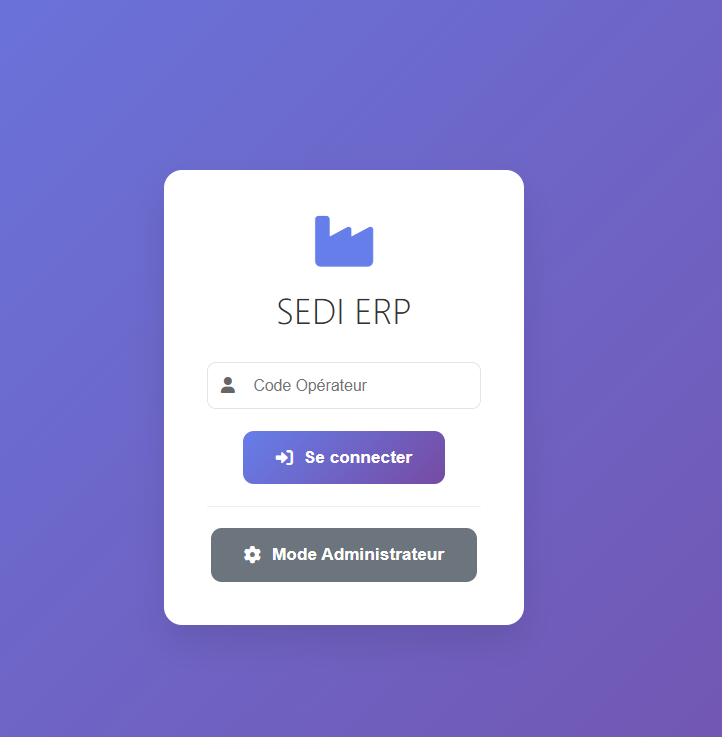
Écran de connexion : vous tapez votre matricule puis Se connecter.
Le bouton gris du bas (« Mode Administrateur ») est réservé aux responsables.
Si ça ne marche pas
Pourquoi : le matricule est faux, incomplet, ou inconnu dans
l’ERP. Un message d’erreur apparaît en général sous le champ. Beaucoup
d’erreurs viennent aussi du fait qu’on essaie un login Windows à la place du
matricule.
Que faire : revérifier le numéro chiffre par chiffre. Si le
problème continue, prévenir le chef d’équipe pour qu’il contrôle le compte
opérateur.
Connexion refusée : le code opérateur n’a pas été accepté.
À minuit, le site vous ramène automatiquement à l’écran de login.
Le lendemain, il faut simplement se reconnecter avec le même matricule.
2. Vérifier que c’est bien vous
Une fois connecté, regardez en haut à gauche : votre nom doit apparaître clairement.
L’écran opérateur est organisé en plusieurs blocs (Code de Lancement, Compteur
Journée, Mon Historique, Contrôles). Prenez quelques secondes pour vérifier que
vous êtes bien sur votre session avant de pointer.
Si ce n’est pas votre nom, cliquez sur Déconnexion en haut à
droite, puis reconnectez-vous avec le bon matricule. Ne continuez jamais à pointer
sous le nom d’un collègue.
Quand ça marche
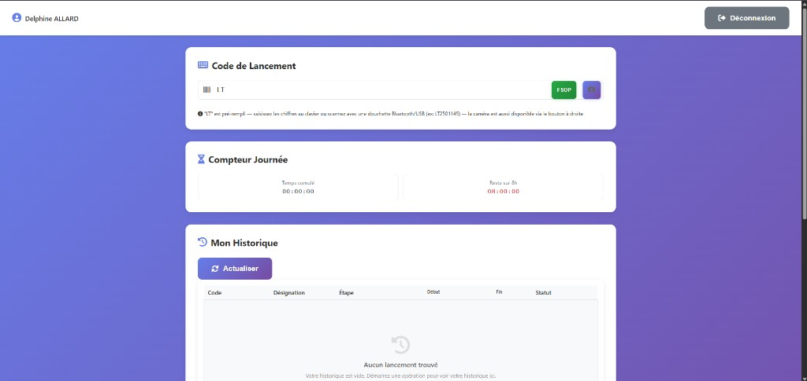
Après connexion : votre nom est visible en haut à gauche, et le champ lancement
commence déjà par « LT ».
Si ça ne marche pas
Pourquoi : un autre opérateur est encore connecté sur la tablette,
ou la page est restée figée après un plantage / une coupure réseau.
Que faire : cliquez sur Déconnexion, ou actualisez le navigateur
avec
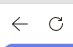
puis reconnectez-vous proprement.
3. Saisir le code de lancement (LT)
Dans le champ Code de Lancement, le préfixe LT est déjà écrit.
Complétez uniquement les chiffres (par exemple 2600401 pour
obtenir LT2600401).
Sur tablette : une fois les chiffres saisis, appuyez sur la
flèche en bas à droite du clavier (↵, OK ou Entrée). Sans ce
geste, le LT peut rester en « En attente de validation » et le message vert
n’apparaît pas.
Attendez le message vert de succès avant de démarrer : c’est la preuve que le LT
a bien été trouvé dans l’ERP.
Quand ça marche
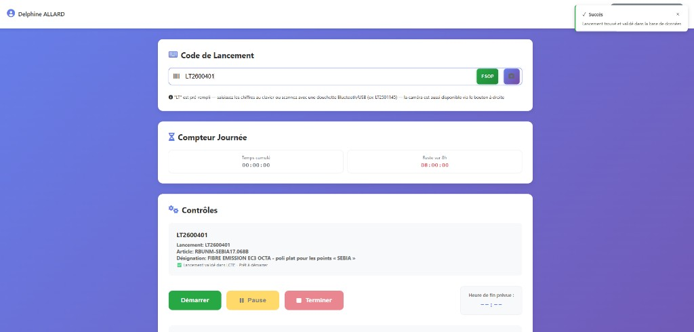
Message vert « Succès » : le lancement est trouvé et validé. Vous pouvez passer
à la section Contrôles.
Si ça ne marche pas
Pourquoi : les chiffres sont incorrects, le LT n’existe pas
encore, ou il n’est pas disponible dans l’ERP. Un message rouge d’erreur
s’affiche alors : ne démarrez pas tant que le LT n’est pas validé.
Que faire : resaisir le code lentement, appuyer sur la flèche
du clavier pour valider, vérifier le planning, ou demander au chef d’équipe si le
LT est bien ouvert.
Cas fréquent sur tablette : les chiffres sont corrects mais le
statut reste « En attente de validation » — appuyez sur la
flèche en bas à droite du clavier pour lancer la recherche du LT.
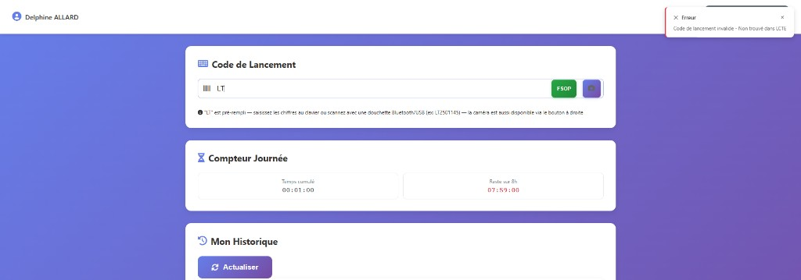
LT introuvable : vérifier la saisie ou demander confirmation au planning.
Cas particulier — champ grisé / impossible d’écrire :
si un lancement est déjà En cours, le champ Code de Lancement
est volontairement verrouillé. Cela évite de pointer un nouveau LT sans avoir
fermé le précédent. Dans ce cas, cliquez d’abord sur Terminer
(bouton rouge), puis saisissez le nouveau code.
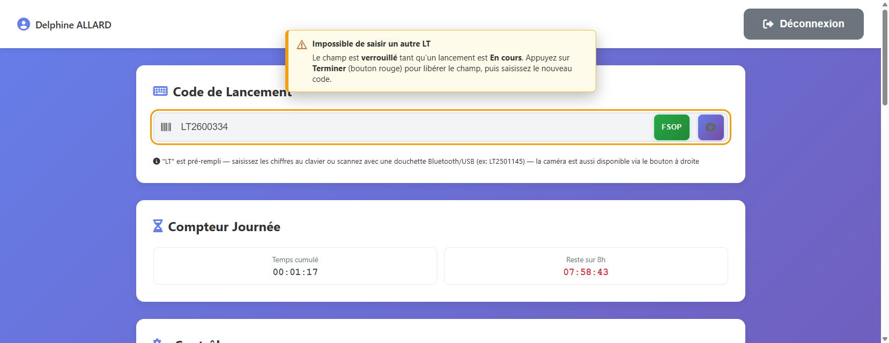
Champ verrouillé : impossible de taper un autre LT tant que le travail actuel
n’est pas terminé.
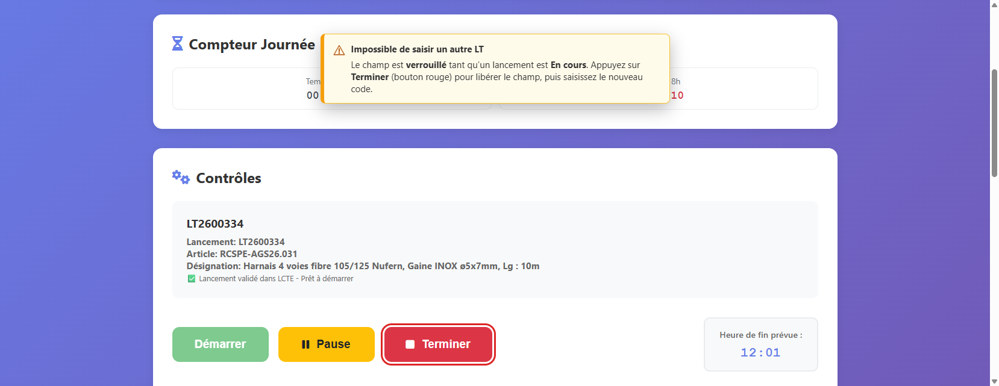
Solution : cliquer Terminer → le champ se libère → saisir
le nouveau LT.
4. Lire le détail dans la section Contrôles
Après la validation du LT, la section Contrôles affiche le détail du lancement :
numéro LT, article, désignation, et un message du type
« Lancement validé… Prêt à démarrer ». C’est le moment de vérifier que vous êtes
bien sur le bon travail avant de lancer le chronomètre.
Quand ça marche
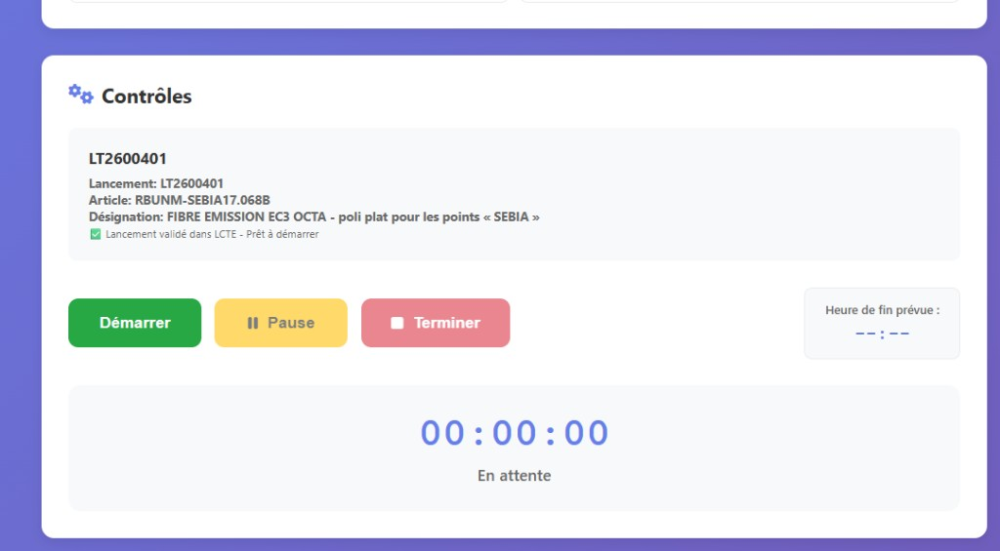
Contrôles OK : le détail du LT est visible, et les boutons Démarrer / Pause /
Terminer sont prêts. Le temps restant apparaît juste après
(voir étape suivante).
Si ça ne marche pas
Pourquoi : le LT n’a pas encore été validé correctement à
l’étape précédente, donc la section Contrôles n’a pas les bonnes informations.
Que faire : revenir au champ lancement, resaisir / revalider,
et attendre le message vert avant de continuer.
4 bis. Voir le temps restant sur le lancement
Dès que le LT est validé (message vert), SEDI Tablette calcule le
temps restant théorique à partir des données ERP et SILOG.
Vous voyez deux indicateurs dans la section Contrôles :
Total LT — temps restant sur l’ensemble du lancement (toutes
les étapes de fabrication additionnées).
Temps restant étape — encadré à droite des boutons Démarrer /
Pause / Terminer : temps restant pour la phase sélectionnée (ou la seule phase
du LT).
Le calcul utilise la gamme du LT dans l’ERP
(LCTC : temps de réglage + temps unitaire × quantité lancée), puis
soustrait le temps déjà pointé dans SILOG (ETEMPS)
et les durées saisies sur tablette pas encore transmises
(ABTEMPS_OPERATEURS, statuts autres que Transmis / refusé).
Si le temps dépasse la gamme, la valeur s’affiche en
dépassé (+durée) (couleur orange).
Quand ça marche
Exemple LT2600888 : Total LT et
Temps restant étape (ici identiques car une seule phase).
À droite : l’encadré « Temps restant étape » avec la durée (ex. 04:19:12).
Si ça ne marche pas
Pourquoi : le LT n’est pas validé, la gamme LCTC n’a pas de
temps renseigné (temps poste / réglage à 0), ou la page n’est pas à jour
(cache navigateur, ancienne version du site).
Que faire : valider le LT (flèche du clavier sur tablette),
actualiser la page (Ctrl+F5), vérifier l’étape choisie si le LT est multi-phases.
Si « gamme LCTC sans temps » s’affiche pour le Total LT, la gamme ERP est vide :
prévenir méthodes / planning.
Changer l’étape dans la liste met à jour le Temps restant étape
sans ressaisir le LT. Le Total LT reste global au lancement.
5. Choisir l’étape quand le LT a plusieurs phases
Certains lancements ont plusieurs phases dans l’ERP. Elles peuvent toutes
s’appeler « Fabrication », mais avec des numéros différents (010, 040, 060…).
Dans ce cas, une liste Étape (Phase) apparaît dans Contrôles.
Vous devez choisir la phase sur laquelle vous travaillez réellement
avant de démarrer, pour que le temps soit affecté au bon endroit.
Exemple réel avec le lancement LT2600106 (coupleur) : trois
phases, uniquement en Fabrication :
010 (Composant) — Fabrication
040 (Connect) — Fabrication
060 (Composant) — Fabrication
Quand ça marche
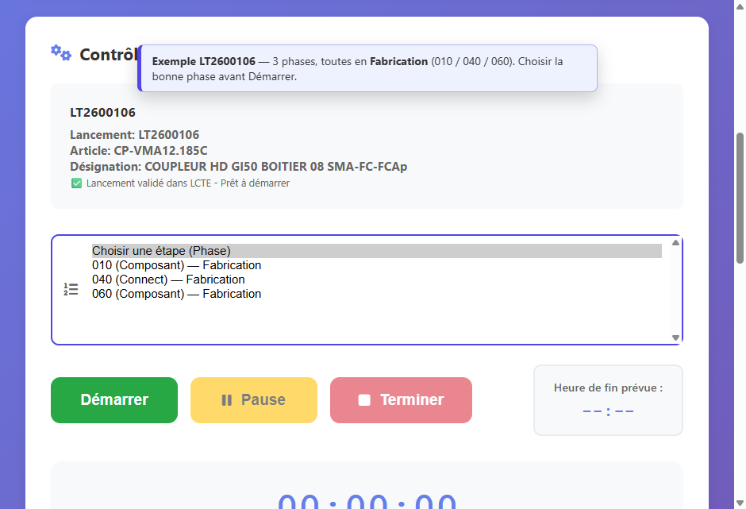
Après validation du LT multi-phases : la liste des étapes apparaît.
Choisissez celle qui correspond à votre travail du moment.
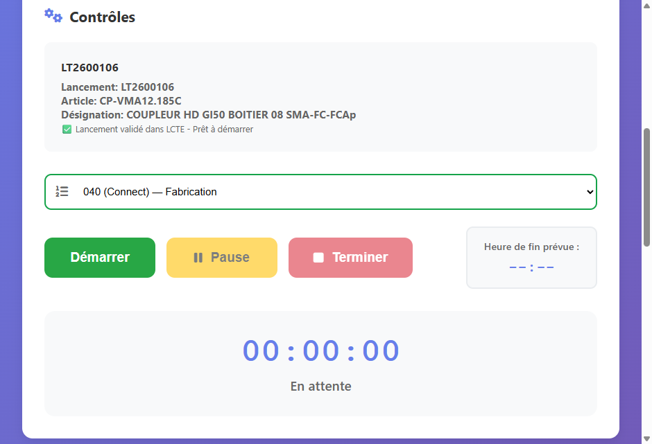
Une fois l’étape choisie (ici 040 — Fabrication), vous pouvez
cliquer sur Démarrer.
Si ça ne marche pas
Pourquoi : aucune étape n’a été sélectionnée alors que le LT
en a plusieurs. La liste reste sur « Choisir une étape (Phase) », et le
démarrage ne peut pas être correct.
Que faire : ouvrir la liste, choisir 010, 040 ou 060 selon
votre phase, puis démarrer. Si le LT n’a qu’une seule phase, cette liste
n’apparaît pas : c’est normal.
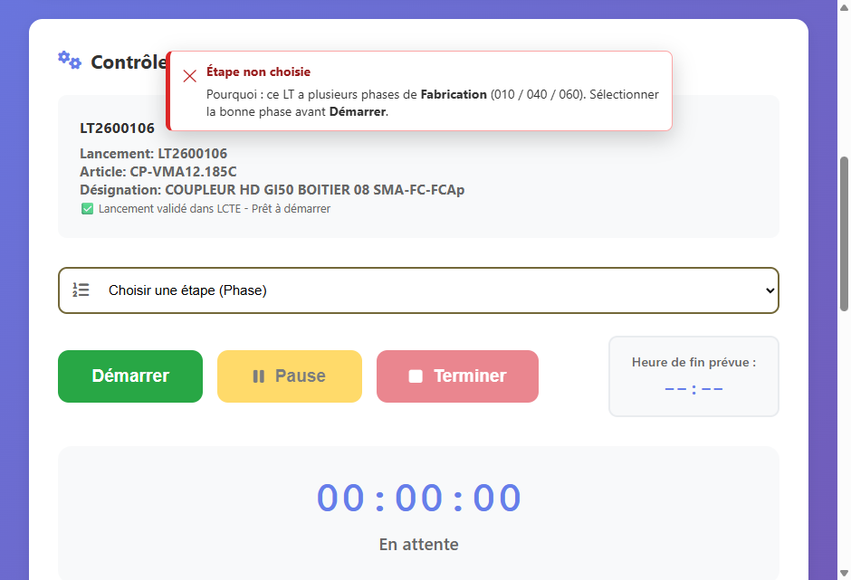
Sans choix d’étape sur un LT multi-phases, le démarrage est bloqué ou incorrect.
Rappel : si une seule phase existe pour le LT, le système pointe directement
dessus et n’affiche pas de liste à choisir.
6. Démarrer le chronomètre
Avant de démarrer, le chronomètre est à 00:00:00 et le statut
est « En attente ». Quand vous êtes vraiment prêt à travailler, cliquez sur le
bouton vert Démarrer : le chrono part, le statut passe à
En cours, et une ligne apparaît dans Mon Historique.
Quand ça marche
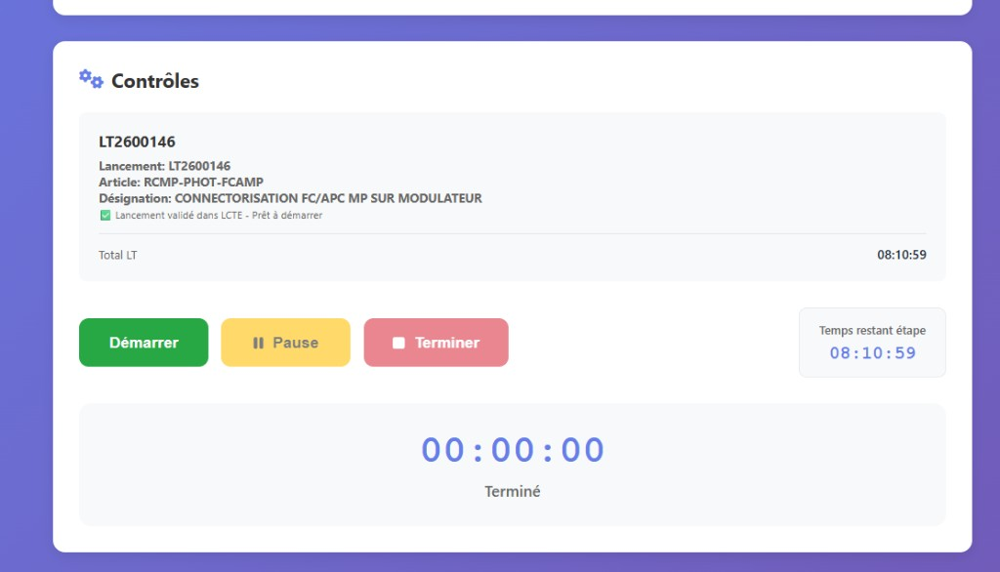
Statut En attente : cliquez sur Démarrer (vert) pour lancer le temps.
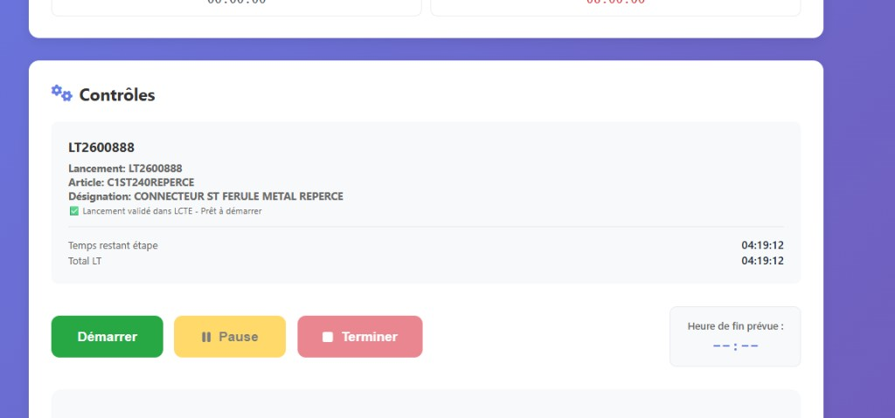
Statut En cours : le chronomètre tourne, et le pointage apparaît dans
Mon Historique.
Si ça ne marche pas
Pourquoi : le LT n’est pas validé, l’étape n’a pas été choisie
alors qu’elle est obligatoire, ou un autre travail est déjà en cours sur ce poste.
Que faire : revenir aux étapes 3 à 5, valider le LT, choisir
l’étape si demandée, ou Terminer / Pause le travail précédent avant de relancer.
7. Pause et Terminer
Pendant un travail En cours, deux boutons sont particulièrement importants.
Pause (jaune) sert pour une interruption temporaire : le temps
de pause n’est pas compté comme de la production. Terminer (rouge)
sert quand le travail est vraiment fini.
Le bouton Terminer est obligatoire en fin de travail. Sans lui,
le temps reste « En cours », n’apparaît pas correctement pour le transfert SILOG,
et le champ LT reste verrouillé : vous ne pourrez pas saisir un autre lancement.
Quand ça marche
En cours : Pause et Terminer sont actifs. Après Terminer, la ligne passe au
statut Terminé.
Si ça ne marche pas
Pourquoi (oubli de Terminer) : le travail reste En cours,
l’admin ne voit pas la ligne comme prête à transférer, et le champ Code de
Lancement reste bloqué.
Que faire : dès que le travail est fini, cliquez toujours sur
Terminer (rouge) avant de quitter le poste ou de changer de LT.
Sans Terminer : le champ LT reste verrouillé. Après Terminer, vous pouvez
saisir un autre lancement.
Compteur journée et historique
Le bloc Compteur Journée montre le temps cumulé de la journée
et ce qu’il reste par rapport à un repère de 8 heures. Le bloc
Mon Historique liste vos LT du jour. Si une ligne semble manquer,
cliquez sur Actualiser pour recharger l’affichage depuis le serveur.
Remplir un FSOP
Le FSOP est la fiche de traçabilité du lancement : on y renseigne les composants,
les codes lot, les dates, les contrôles et les opérateurs. Cette fiche est stockée
sur le partage réseau de traçabilité. Le pointage du temps et le FSOP sont
indépendants : même si le FSOP échoue (dossier manquant, partage coupé…), vous
pouvez continuer à pointer normalement.
Exemple utilisé dans ce guide : LT LT2600334, formulaire
F479, numéro de série 26-17-01.
1. Ouvrir FSOP
Pour ouvrir un FSOP, vous devez être connecté en opérateur et avoir saisi un
LT complet (par exemple LT2600334). Ensuite cliquez sur le bouton
vert FSOP, situé près du champ lancement (à côté de la caméra).
Quand ça marche
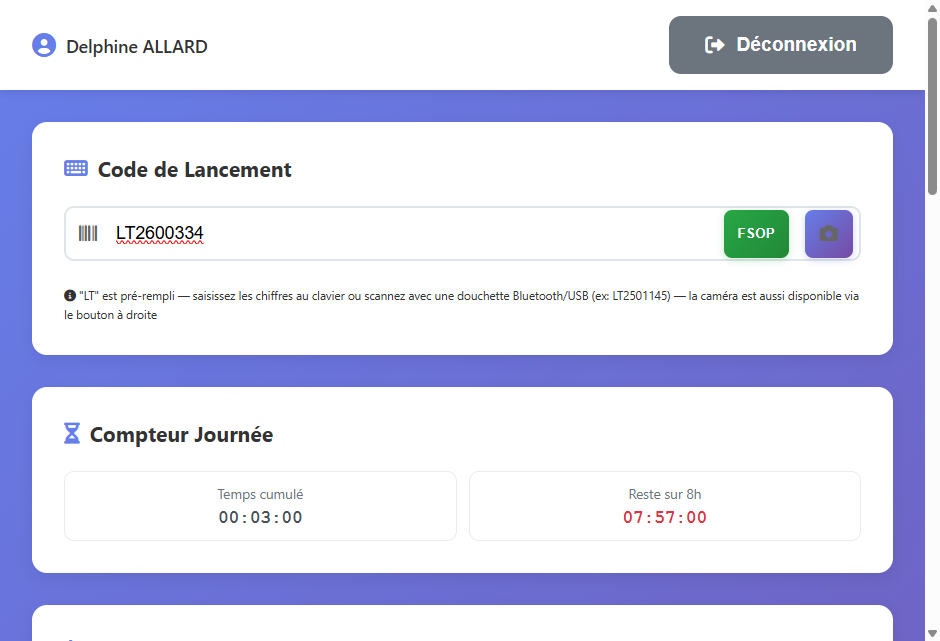
LT saisi correctement + bouton vert FSOP disponible.
Si ça ne marche pas
Pourquoi : le champ lancement est vide, il ne contient que
« LT » sans chiffres, ou vous êtes connecté en mode admin (FSOP est prévu pour
le parcours opérateur avec un LT valide).
Que faire : revenir en session opérateur, saisir le LT complet,
attendre sa validation, puis recliquer sur FSOP.
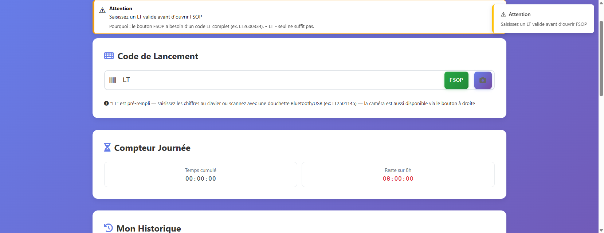
Message d’avertissement : il faut un LT valide avant d’ouvrir FSOP.
2. Choisir le formulaire et le numéro de série
Dans la fenêtre FSOP, indiquez le numéro de formulaire (par exemple
F479) et le numéro de série de la pièce / du lot.
Ce numéro de série doit déjà exister dans le fichier de mesures du LT.
Ensuite cliquez sur Remplir dans l’interface pour ouvrir le
formulaire interactif.
Quand ça marche
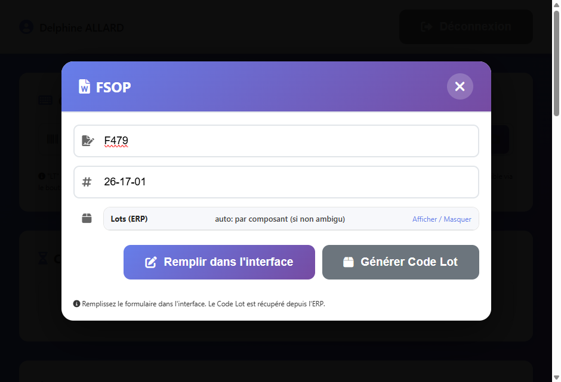
Fenêtre FSOP : numéro de formulaire, numéro de série, puis Remplir /
Générer Code Lot.
Si ça ne marche pas
Pourquoi : le numéro de série n’a pas encore été créé dans le
fichier de mesures (méthodes / traçabilité), ou le numéro de formulaire est
incorrect pour ce LT.
Que faire : vérifier le numéro auprès de méthodes, faire créer
le SN si besoin, puis réessayer Remplir dans l’interface.
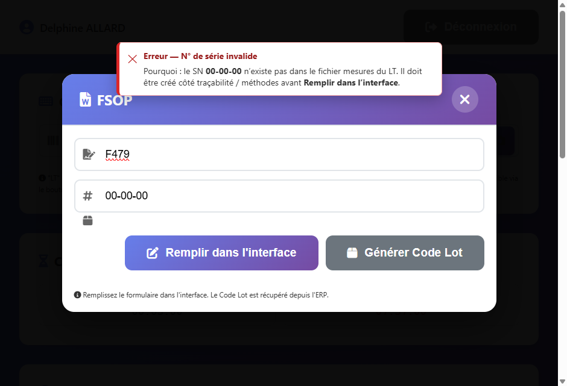
Série invalide : le numéro de série doit exister avant de remplir le FSOP.
3. Générer et consulter les codes lot ERP
Le bouton Générer Code Lot récupère les lots disponibles dans
l’ERP pour ce LT. Ensuite, Afficher / Masquer permet de voir la
liste par composant / article. Un clic sur une puce copie le code, ce qui est
pratique si vous devez le coller ailleurs.
Point important pour la suite : dans le formulaire, les lots proposés sont ceux
liés à l’article de la ligne, pas la totalité des lots du LT.
S’il y a plusieurs lots pour la même référence, vous aurez un choix à faire à
l’étape suivante.
Quand ça marche
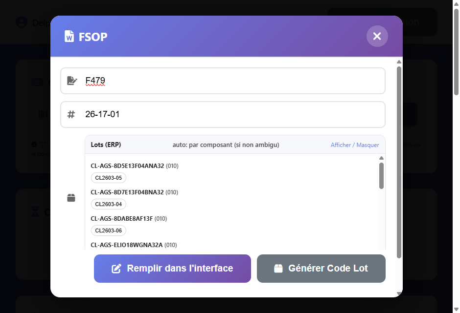
Lots ERP affichés par composant. Afficher / Masquer permet de plier ou déplier
la liste.
Si ça ne marche pas
Pourquoi : le LT n’a pas de lignes de lots dans l’ERP, ou
l’API / le réseau est indisponible. La liste reste alors vide.
Que faire : prévenir méthodes. Vous pouvez malgré tout ouvrir
le formulaire et saisir un code lot à la main si vous le connaissez.
4. Remplir le formulaire
Après Remplir dans l’interface, le formulaire s’ouvre avec les
tableaux à compléter (composants / lots, dates, mesures, contrôles, etc.).
Le numéro de lancement est souvent déjà prérempli.
Pour la colonne Lot, le comportement dépend de l’article de
chaque ligne :
s’il n’y a qu’un seul lot ERP pour cet article, il peut être
prérempli automatiquement ;
s’il y a plusieurs lots pour la même référence article, un
menu déroulant apparaît (-- Choisir -- / lots / Autre…) pour que vous
sélectionniez le bon ;
s’il n’y a aucun lot associé à l’article, le champ reste en saisie libre.
Pour la colonne Opérateur, choisissez
vos propres initiales / votre nom dans le menu
(ou « Autre… » pour les saisir).
Ne mettez jamais le nom ou les initiales d’une autre personne.
Cette colonne sert de traçabilité qualité : c’est la preuve de qui a réellement
réalisé l’opération.
Quand ça marche
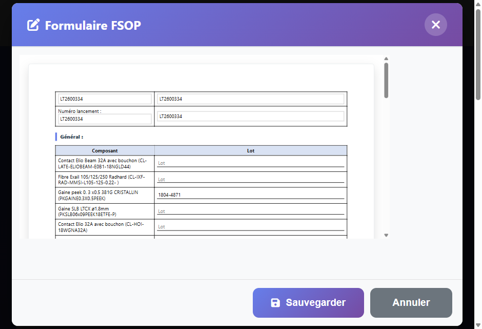
Formulaire ouvert : tableau Général (composants / lots) et boutons
Sauvegarder / Annuler en bas.
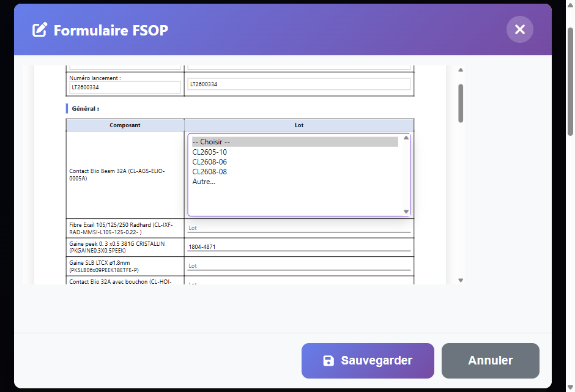
Exemple : pour l’article CL-AGS-ELIO-0005A, plusieurs codes lot
existent. Le menu propose uniquement ces lots-là (ici 3), pas tous les lots du LT.
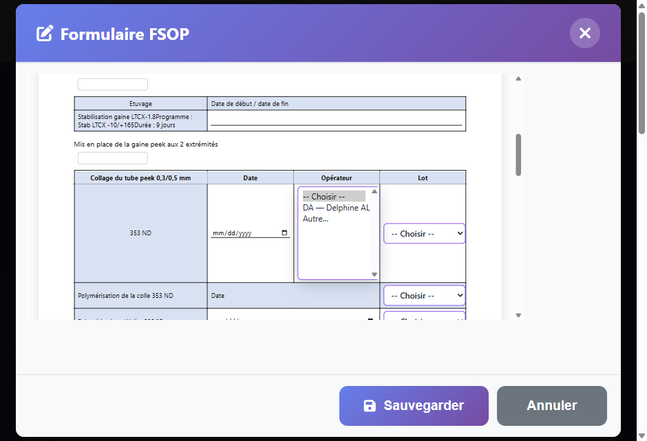
Colonne Opérateur : choisissez vos initiales / votre nom uniquement.
Si ça ne marche pas
Pourquoi : le dossier du LT est introuvable sur le partage
traçabilité, ou l’accès réseau est coupé. Ce n’est en général
pas un bug de la tablette elle-même.
Que faire : prévenir méthodes / maintenance. En attendant,
vous pouvez continuer le pointage du temps normalement.
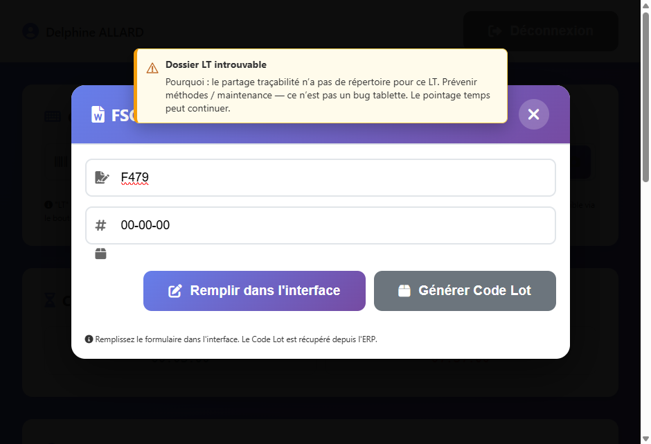
Dossier / répertoire du LT manquant sur le partage réseau de traçabilité.
5. Sauvegarder
Quand le formulaire est rempli, cliquez sur Sauvegarder pour
écrire le fichier FSOP sur le partage traçabilité, dans le dossier du LT.
Le bouton Annuler ferme la fenêtre sans enregistrer vos
modifications.
Quand ça marche
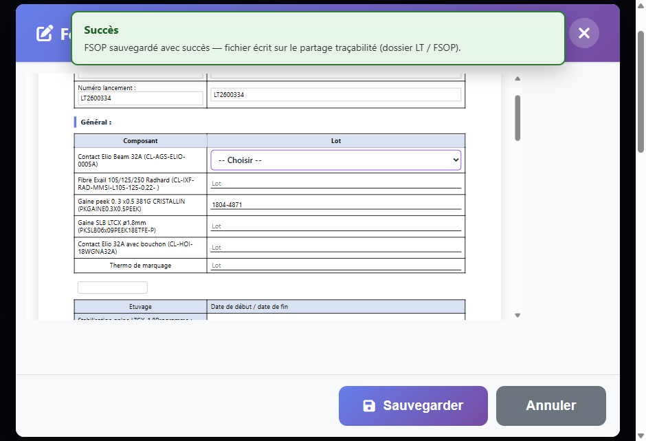
Message de succès : le FSOP a bien été enregistré sur le partage
(dossier LT / FSOP).
Si ça ne marche pas
La sauvegarde peut échouer pour plusieurs raisons fréquentes. Voici les plus
courantes, avec ce qu’il faut faire :
Fichier déjà ouvert ou verrouillé — quelqu’un a le FSOP
(ou un Excel lié) ouvert sur un PC. Demandez de fermer le fichier, puis
réessayez.
Partage traçabilité inaccessible — réseau coupé ou montage
serveur indisponible. Prévenez l’IT. Le pointage du temps peut continuer.
Dossier LT introuvable — il n’existe pas de répertoire pour
ce LT sur le partage. Prévenez méthodes / maintenance.
Droits d’écriture insuffisants — le serveur ne peut pas
écrire dans le dossier FSOP. Prévenez l’IT.
Pendant que le bouton affiche « Sauvegarde… », ne forcez pas l’arrêt de la
tablette et ne fermez pas brutalement le navigateur.
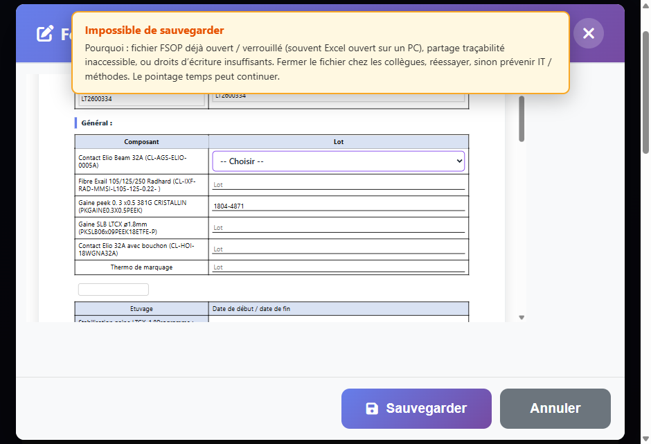
Échec typique : fichier verrouillé, partage inaccessible, ou droits manquants.
Autre cause fréquente : dossier LT introuvable sur le partage, autant à
l’ouverture qu’à la sauvegarde.
Les fichiers FSOP vivent sur un partage Windows monté côté serveur.
Sans accès au bon dossier, l’ouverture ou la sauvegarde échoue, même si le
pointage du temps continue de fonctionner.
Écran admin
L’écran administrateur sert à surveiller les pointages de l’atelier, corriger les
erreurs, ajouter un oubli, et lancer le Transfert qui prépare
l’envoi des temps vers SILOG. Il ne remplace pas le pointage opérateur : il le
contrôle et le valide.
1. Passer en Mode Administrateur
Sur l’écran de login, cliquez sur Mode Administrateur, le bouton
gris situé sous « Se connecter ». Ce n’est pas le champ matricule : c’est
l’entrée vers l’écran d’administration.
Quand ça marcheBouton gris Mode Administrateur sous Se connecter.
Si ça ne marche pas
Pourquoi : la page n’a pas bien chargé, ou vous êtes déjà sur
l’écran Administration sans vous en rendre compte.
Que faire : actualiser la page, ou utiliser Retour puis
recliquer sur Mode Administrateur.
2. Se connecter avec le compte admin
Saisissez l’identifiant et le mot de passe admin SEDI Tablette fournis par l’IT
ou le responsable, puis cliquez sur Se connecter. Ces comptes
sont dédiés à l’administration de l’outil : ils ne correspondent ni au matricule
opérateur, ni au login Windows, ni à Jenkins.
Quand ça marche
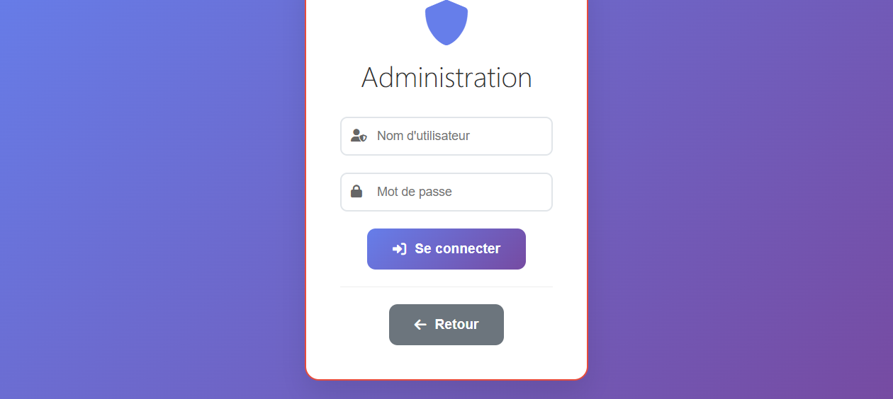
Écran Administration : utilisateur + mot de passe.
Le bouton Retour ramène au login opérateur.
Si ça ne marche pas
Pourquoi : identifiant ou mot de passe incorrect, ou confusion
avec un autre type de compte (matricule, Windows, Jenkins…).
Que faire : revérifier les identifiants auprès de l’IT /
responsable, sans réutiliser un compte opérateur.
Échec de connexion admin : les identifiants n’ont pas été acceptés.
3. Comprendre le tableau de bord
Une fois connecté, vous arrivez sur le Tableau de Bord Admin.
En haut se trouvent les filtres et les boutons d’action. Au centre, des cartes
résument la situation (opérateurs actifs, opérations en cours, en pause,
terminées). En dessous, le tableau « Détails des Opérations » liste les lignes
une par une.
Quand ça marche
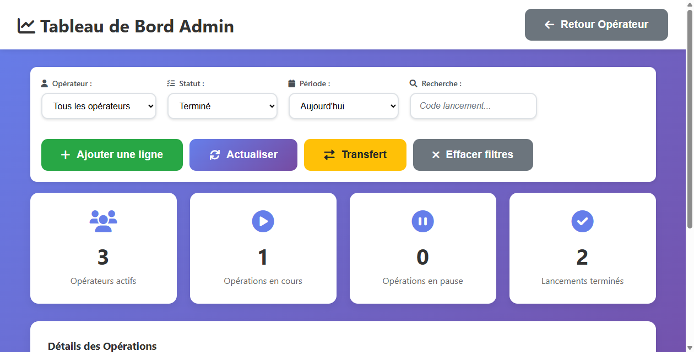
Filtres, boutons d’action et cartes de synthèse du tableau de bord.
Si ça ne marche pas
Pourquoi : la session a expiré, ou les filtres sont trop
restrictifs (période / statut) et masquent toutes les lignes.
Que faire : cliquer sur Effacer filtres, puis
sur Actualiser.
4. Utiliser les filtres
Les filtres permettent de ne garder que les lignes utiles avant de contrôler ou
de transférer. Prenez le temps de les régler correctement, surtout avant un
transfert SILOG.
Filtre
À quoi ça sert
Opérateur
Limiter la vue à une personne, ou laisser « Tous les opérateurs ».
Statut
En cours / En pause / Terminé (prêt à envoyer) /
Transmis SILOG (déjà remonté).
Période
Aujourd’hui, hier, semaine, mois, ou un jour précis choisi manuellement.
Recherche
Retrouver un LT précis (exemple : LT2600401).
Astuce pour préparer un transfert : filtrez sur Terminé et sur
la période du jour, afin de ne voir que les lignes réellement à envoyer.
Quand ça marcheLes filtres se trouvent en haut du tableau de bord.
Si ça ne marche pas
Pourquoi : mauvaise période ou mauvais statut
(par exemple Transmis au lieu de Terminé). Le tableau paraît vide alors que
des lignes existent.
Que faire : remettre Aujourd’hui + Terminé, ou cliquer sur
Effacer filtres pour repartir d’une vue claire.
5. Boutons d’action
Les boutons en haut du tableau de bord servent aux actions principales de
l’admin. Voici leur rôle, dans l’ordre où on les utilise le plus souvent.
Bouton
Rôle
Ajouter une ligne (vert)
Créer un pointage manuel lorsqu’un opérateur a oublié de pointer.
Actualiser (violet)
Recharger le tableau avec les données les plus récentes du serveur.
Transfert (orange)
Ouvrir la fenêtre d’envoi des lignes terminées vers SILOG
(voir aussi Envoi vers SILOG).
Effacer filtres (gris)
Remettre une vue complète et claire, sans filtre actif.
Quand ça marcheAjouter (vert) · Actualiser (violet) · Transfert (orange) · Effacer (gris).
Si ça ne marche pas
Pourquoi (surtout pour Transfert) : aucune ligne n’est en
statut Terminé. Soit elles sont déjà Transmis, soit les opérateurs n’ont pas
cliqué Terminer à l’atelier.
Que faire : vérifier le filtre Terminé et la section
Envoi vers SILOG.
6. Lire le tableau « Détails des Opérations »
Le tableau liste chaque pointage avec l’opérateur, le LT, la désignation,
la phase / le libellé d’étape (par exemple 010 — Fabrication),
les heures, le statut et les actions possibles. C’est ici que l’on voit si une
ligne est encore corrigible ou déjà transmise.
Quand ça marche
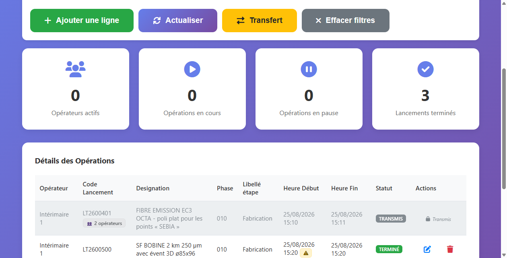
Exemple : phase 010 / Fabrication.
TERMINÉ = encore modifiable ; TRANSMIS = grisé (cadenas).
Si ça ne marche pas
Pourquoi : une ligne absente signifie souvent que l’opérateur
n’a pas cliqué Terminer, ou que le filtre masque la ligne. Une ligne grisée
signifie qu’elle est déjà Transmis : on ne la corrige plus depuis cet écran.
7. Fenêtre Transfert
Quand vous cliquez sur Transfert, une fenêtre s’ouvre pour
choisir précisément les lignes à envoyer. Cochez celles qui sont correctes
(ou utilisez Tout sélectionner), puis validez avec Transférer.
Si vous n’êtes pas prêt, cliquez sur Fermer pour annuler sans
envoyer.
Quand ça marche
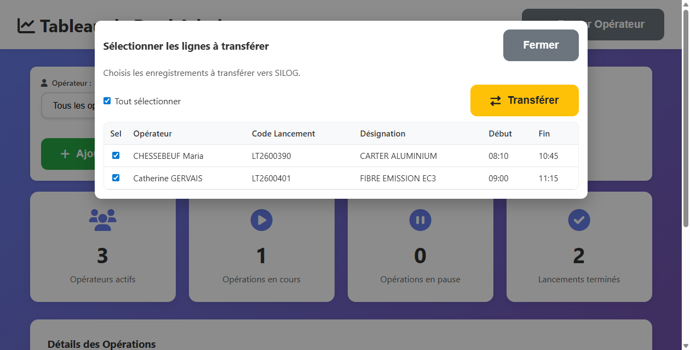
Cases à cocher, puis bouton orange Transférer.
Si ça ne marche pas
Pourquoi : il n’y a aucune opération terminée à transférer
(déjà Transmis, ou pas de Terminer côté atelier).
Que faire : contrôler le filtre Terminé et les pointages
opérateurs, puis réessayer.
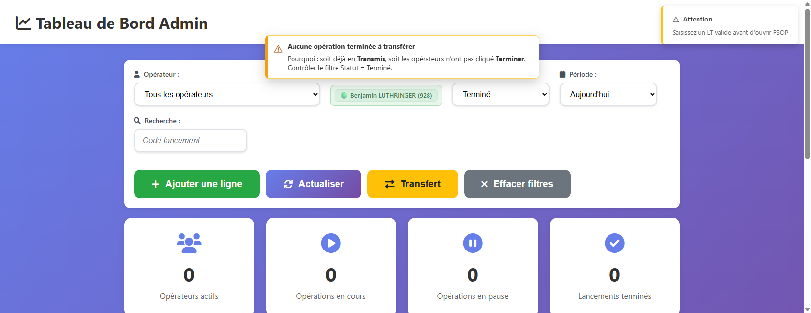
Message d’échec : aucune opération terminée à envoyer.
Actions sur une ligne
Action
Quand l’utiliser
Corriger
Sur une ligne non transmise : ajuster les heures ou le statut, puis
sauvegarder.
Supprimer
Uniquement pour un doublon évident ou une erreur claire.
Cadenas / Transmis
La ligne est déjà dans SILOG. On ne la modifie plus depuis l’admin tablette.
Ordre de travail conseillé en fin de journée
Régler la période sur Aujourd’hui (ou la bonne date).
Filtrer sur Terminé et contrôler les durées / LT.
Corriger ou ajouter les lignes manquantes si besoin.
Lancer Transfert, sélectionner, puis confirmer.
Plus tard, filtrer sur Transmis SILOG pour vérifier que les
lignes sont bien passées (grisées).
Envoi vers SILOG
Quand un opérateur clique sur Terminer, son temps reste d’abord
dans SEDI Tablette. Il faut ensuite une validation côté admin (bouton Transfert),
puis un passage automatique vers SILOG qui a lieu environ
toutes les 2 heures sur le poste dédié. Autrement dit : Terminer
à l’atelier ne suffit pas à lui seul pour que le temps apparaisse immédiatement
dans l’ERP.
1. Préparer les lignes à envoyer
Ouvrez l’admin et filtrez sur le statut Terminé
(pas Transmis). Contrôlez les durées, les LT et les opérateurs.
Un même LT travaillé par plusieurs personnes donne plusieurs lignes : c’est
normal, chacune doit être vérifiée.
Quand ça marche
Filtrer sur Terminé, puis utiliser le bouton orange
Transfert.
TERMINÉ = ligne à envoyer · TRANSMIS = ligne déjà remontée (grisée).
Si ça ne marche pas
Pourquoi : il n’y a rien en Terminé. Soit les opérateurs sont
encore En cours / En pause, soit les lignes sont déjà Transmis, soit la période
filtrée est incorrecte.
Que faire : faire Terminer côté atelier si besoin, élargir la
période, ou Effacer les filtres pour retrouver les lignes.
Aucune opération terminée à transférer pour le moment.
2. Confirmer le transfert
Cliquez sur Transfert, cochez les lignes à envoyer
(ou Tout sélectionner), puis validez avec Transférer.
Pendant le message « Transfert en cours… », laissez le traitement se terminer
et ne recliquez pas plusieurs fois de suite.
Quand ça marcheFenêtre de confirmation : sélectionner les lignes puis Transférer.
Si ça ne marche pas
Pourquoi : une ligne peut être refusée si le LT est soldé /
introuvable dans l’ERP, s’il y a un doublon, ou si la ligne a déjà été prise
en compte.
Que faire : noter l’opérateur, le LT et le message exact à
l’écran. Si rien ne remonte depuis longtemps malgré des transferts réussis
côté admin, prévenir l’IT / le poste SVC_SILOG.
3. Passage automatique dans SILOG
Sur le poste Windows SVC_SILOG, un job tourne
toutes les 2 heures et envoie dans l’ERP les temps déjà validés
côté admin. Personne n’a besoin de lancer SILOG.exe depuis l’atelier : le
mécanisme est automatique une fois le transfert admin fait.
Un temps correctement Terminé à l’atelier puis validé par Transfert admin peut
donc mettre jusqu’à environ 2 heures avant d’apparaître dans SILOG. Ce délai est
normal.
Si ça ne marche pas
Pourquoi : le poste SVC_SILOG est éteint, le job est arrêté,
ou la ligne n’a jamais été validée côté admin.
Que faire : demander à l’IT de vérifier le job des 2 heures.
Pour un signalement utile, indiquez le matricule, le LT et l’heure vue à
l’écran.
Production ou environnement test ?
Il existe deux environnements. L’atelier doit toujours pointer en production.
L’environnement test sert uniquement à vérifier une nouvelle version avant de la
publier pour tout le monde.
Production (atelier)
Test (:8088)
Adresse
https://fsop.sedi-ati.com
http://192.168.1.26:8088
Pour qui
Opérateurs et admin métier
Développeurs / maintenance
Données
Réelles — les pointages comptent pour SILOG
De test — elles ne remplacent pas la prod
Mises à jour
Sur demande, par la maintenance
Automatiques après un passage Jenkins réussi
Ne pointez jamais en test pour remplacer la production : ces temps
n’alimentent pas le SILOG de prod. Si Jenkins est vert mais que l’atelier ne voit
pas encore le changement, c’est normal : la production n’a simplement pas encore
été mise à jour.
Jenkins & Sonar (équipe technique)
Jenkins et Sonar tournent sur le même serveur (ports 8085 et 9000).
L’atelier n’en a pas besoin pour pointer. Ces outils servent à tester et contrôler
le code avant qu’une version n’arrive en production.
Jenkins
À chaque push de code sur GitHub, Jenkins enchaîne les tests backend et frontend,
l’analyse Sonar, la construction des images Docker, puis le déploiement sur le
site test (port 8088). Un pipeline vert signifie que la version
test est à jour. Un pipeline rouge signifie qu’il faut corriger le code avant de
merger.
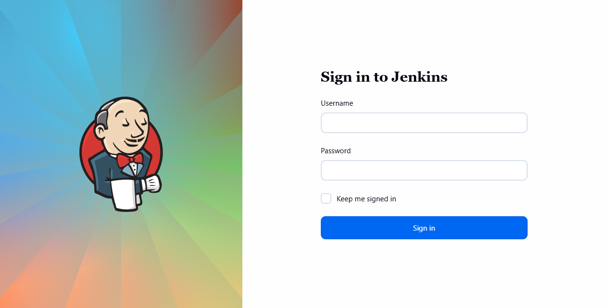
Accès : http://192.168.1.26:8085
— se connecter avec le compte Jenkins (IT / dev), pas avec un matricule atelier.
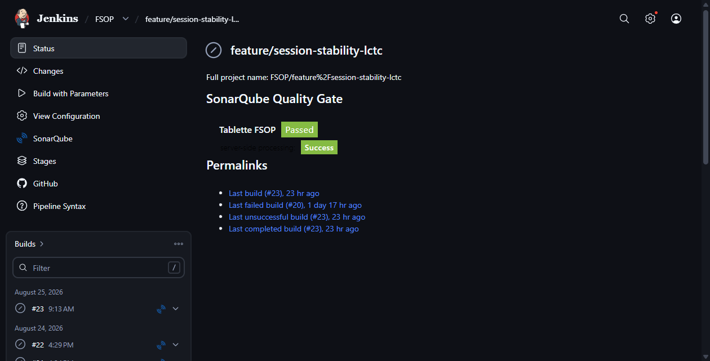
Job FSOP : badge vert Passed = Quality Gate Sonar OK.
Pipeline vert → le site test (:8088) est à jour.
SonarQube
Sonar mesure la qualité du code source (bugs potentiels, dette technique,
couverture de tests) sur le projet tablette-fsop. Si la Quality Gate
échoue, Jenkins peut bloquer le déploiement de la version test.
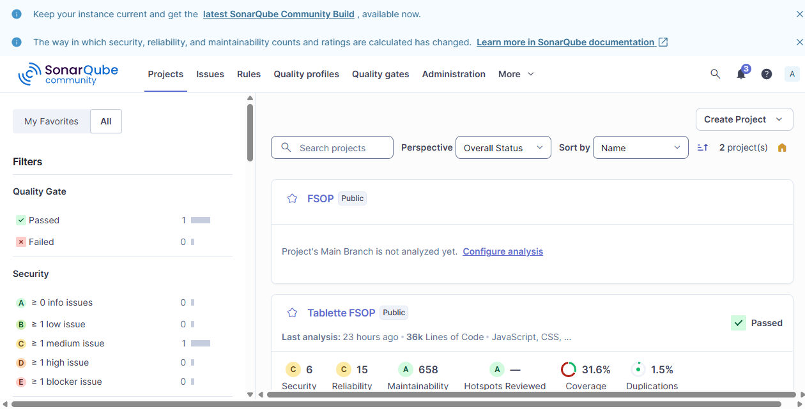
Liste des projets : Tablette FSOP avec badge vert Passed.
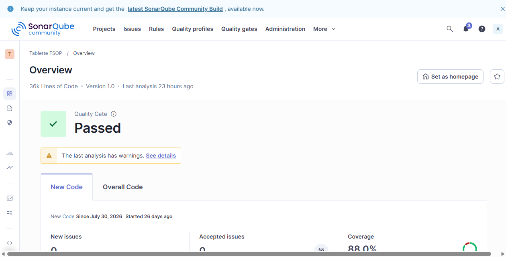
Vue projet :
http://192.168.1.26:9000
— Quality Gate Passed = Jenkins peut continuer le déploiement test.
Problèmes fréquents
Voici les situations les plus souvent rencontrées, avec la première chose à
vérifier avant d’appeler quelqu’un.
Ce que vous voyez
Que vérifier / que faire
Le site ne s’ouvre pas / page blanche
Vérifier le réseau de la tablette, essayer https://192.168.1.26, puis
contacter l’IT si cela continue.
« Erreur serveur » ou chargement sans fin
Vérifier le Wi‑Fi / câble. Si plusieurs tablettes sont touchées en même temps,
prévenir la maintenance (API ou base indisponible).
Connexion opérateur refusée
Vérifier le numéro de matricule exact. Ce n’est pas le login Windows.
Sinon demander au chef d’équipe de contrôler le compte.
LT en « En attente de validation »
Les chiffres sont saisis mais le LT n’est pas encore cherché dans l’ERP.
Appuyez sur la flèche en bas à droite du clavier de la tablette
(↵, OK ou Entrée), puis attendez le message vert.
Impossible de taper un nouveau LT
Un travail est encore En cours. Cliquez d’abord sur Terminer,
puis saisissez le nouveau code.
FSOP : dossier LT introuvable
Le partage traçabilité n’a pas de dossier pour ce LT, ou le réseau est coupé.
Prévenir méthodes / maintenance. Le pointage temps peut continuer.
FSOP : impossible de sauvegarder
Fichier déjà ouvert ailleurs (souvent Excel), partage inaccessible, ou droits
d’écriture manquants. Fermer le fichier chez les collègues, réessayer, sinon
prévenir l’IT.
Temps invisible en admin
L’opérateur a-t-il bien cliqué Terminer ?
Le filtre date / statut est-il le bon (Terminé + bonne période) ?
Transfert SILOG échoue
Noter le LT et le message exact. Vérifier avec l’IT le poste SVC_SILOG et
l’état du LT dans l’ERP.
Nouvelle version absente en atelier
Normal si seul Jenkins a mis à jour le site test. Demander un déploiement
production à la maintenance.
Pour un signalement utile à l’IT / maintenance, préparez : l’heure du problème,
le numéro de matricule, le LT concerné, et une capture d’écran si possible.
Le serveur de référence est serveurproduction (192.168.1.26).